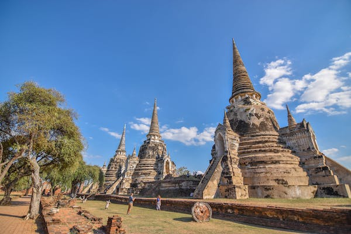

Thailand
Thailand, country located in the centre of mainland Southeast Asia. Located wholly within the tropics, Thailand encompasses diverse ecosystems, including the hilly forested areas of the northern frontier, the fertile rice fields of the central plains, the broad plateau of the northeast, and the rugged coasts along the narrow southern peninsula. Thailand Thailand Until the second half of the 20th century, Thailand was primarily an agricultural country, but since the 1960s increasing numbers of people have moved to Bangkok, the capital, and to other cities. Although the greater Bangkok metropolitan area remains the preeminent urban centre in the country, there are other sizable cities, such as Chiang Maiin the north, Nakhon Ratchasima (Khorat), Khon Kaen, and Udon Thani in the northeast, Pattaya in the southeast, and Hat Yai in the far south. Siam, as Thailand was officially called until 1939, was never brought under European colonial domination. Independent Siam was ruled by an absolute monarchy until a revolution there in 1932. Since that time, Thailand has been a constitutional monarchy, and all subsequent constitutions have provided for an elected parliament. Political authority, however, has often been held by the military, which has taken power through coups. During the last two decades of the 20th century and the first decade of the 21st, parliamentary democracy steadily gained wider popular support. Although a crisis emerged in 2006, when the military, aligned with the monarchy, overthrew an elected government, new parliamentary elections were held—as promised by the interim government—in 2007.

more About Thailand
Morocco
Morocco has a history as an independent nation state stretching back to the 9th century, interrupted only by the brief interlude of the Protectorate (1912-1956) when the country was divided into French and Spanish zones. Morocco, unlike her North African neighbours, was never part of the Turkish Empire. To the south, Morocco claims and has occupied the territory of the Western (formally Spanish) Sahara. This claim forms a major rallying point in domestic politics. Morocco's political system is evolving from a strongly centralised monarchy to a parliamentary system. The King retains much of the executive power, but the Parliament and most of the government are democratically elected.
Morocco has a coast on the Atlantic Ocean that reaches past the Strait of Gibraltar into the Mediterranean Sea. It is bordered by Spanish territory to the north, Algeria to the east, and Western Sahara to the south. Since Morocco controls most of Western Sahara, its de facto southern boundary is with Mauritania. Morocco's capital city is Rabat; its largest city is its main port, Casablanca. Other cities include Agadir, Essaouira, Fes, Marrakech, Meknes, Mohammadia, Oujda, Ouarzazat, Safi, Salé, Tangier and Tétouan. The geography of Morocco spans from the Atlantic Ocean, to mountainous areas, to the Sahara Desert.

more About Morocco
Philipines
The Philippines is a land rich in natural resources, scenic locales, and friendly smiles. Here, everybody is welcome to be part of the fun from the captivating coastlines, to the creative native crafts, to the unique gastronomic experience, you will find the kind of fun that is uniquely yours. Whether you are visiting the Philippines for casual travel or investing for your own business, there is always something fun to discover. Here are the essential information you need to familiarize yourself with this fun-loving country.


more About Philipines